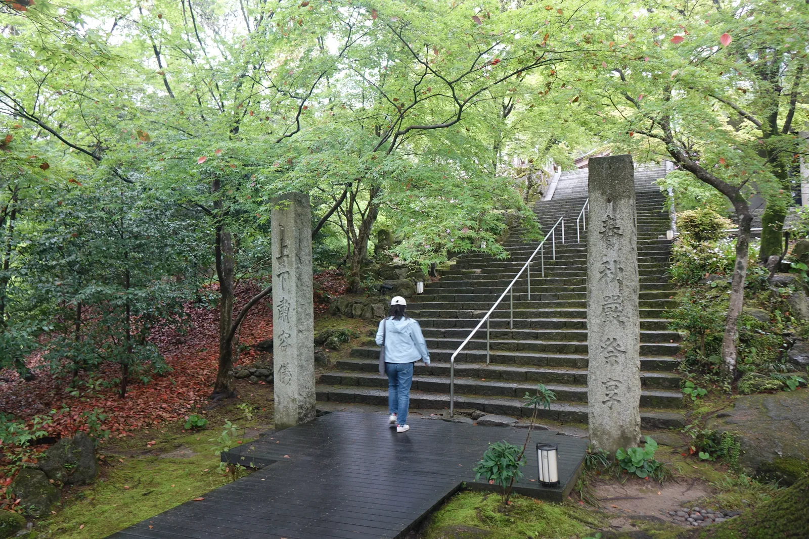
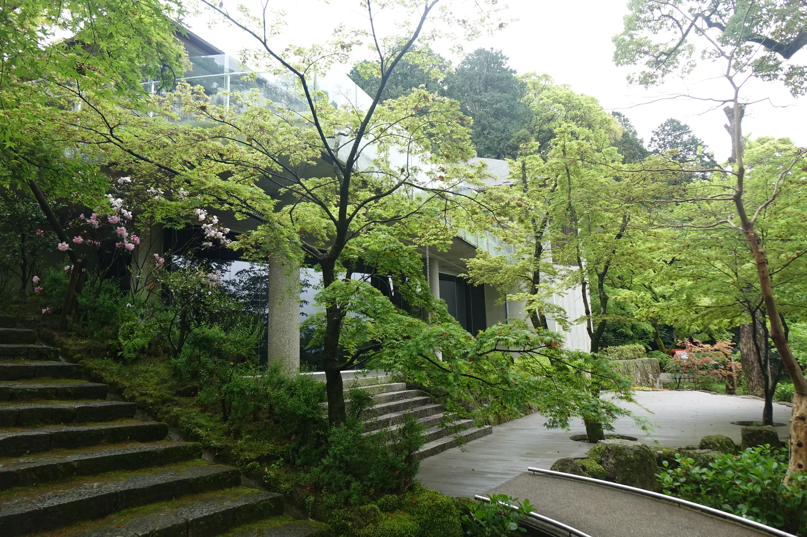
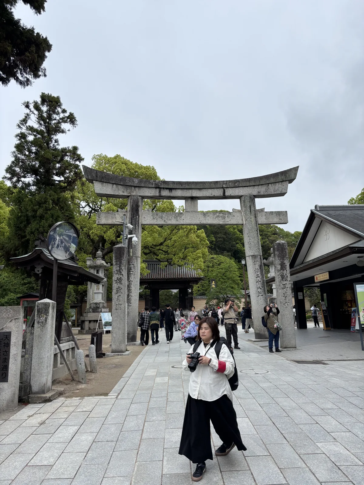
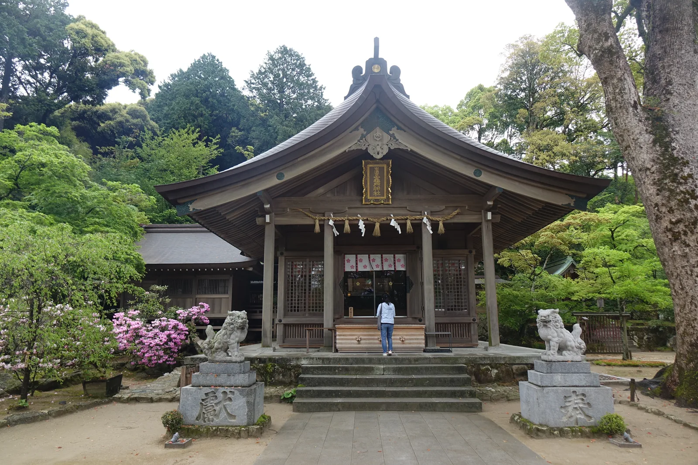
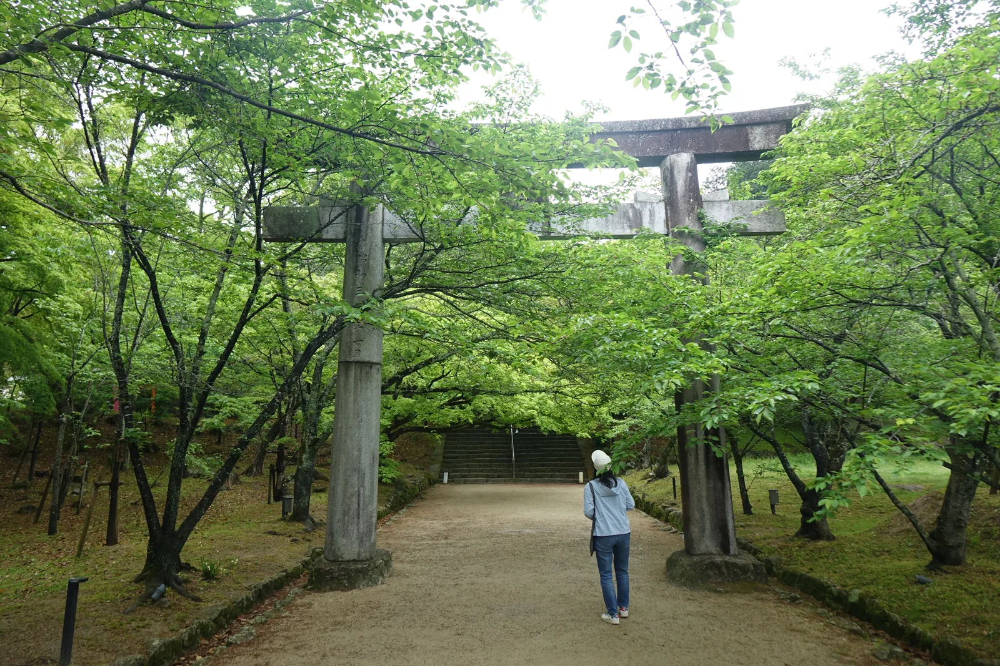
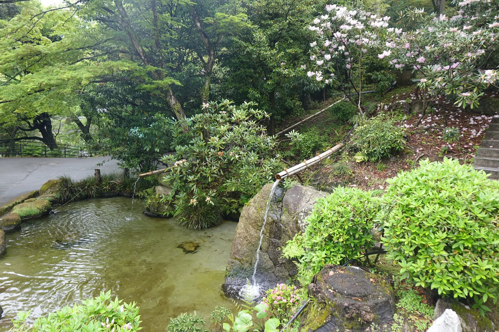
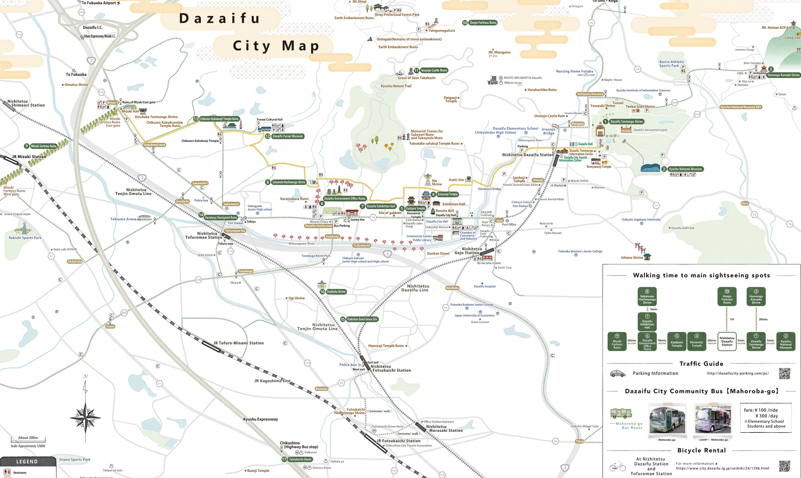

⛩ 神社寺廟散策 · 福岡縣・太宰府市宰府 · 2025-04
太宰府天滿宮
太宰府天満宮だざいふてんまんぐう
- 祭神
- 菅原道真公
- 社格
- 舊官幣中社・別表神社・全國天滿宮總本宮
那天御本殿前面立著的不是御本殿，是一座屋頂上長滿植物的建築——曲面的黑色屋頂 從近處看幾乎要浮起來，二十幾種植物順著坡度長成一片小森林，安靜地待在原本該是 正殿的位置上。御本殿正在整修，已經修了快兩年，還要再修一年多。這座臨時的家， 是建築師從一則傳說裡長出來的答案：一株思念主人的梅樹，一夜之間從京都飛到了太宰府。 屋頂上那片森林，就是那株梅樹飛起來以後，順便帶著周圍的山林一起飛過來的樣子。
唯一無二聖地之認定
太宰府天滿宮供奉的是菅原道真——平安時代的學者與政治家，官至右大臣， 後因政敵讒言被貶謫至太宰府，鬱鬱而終於此地。他的墓所之上就是今天的御本殿， 社方自己的說法是「日本唯一無二の聖地『菅聖庿』」—— 全日本沒有第二座建在天神墓所正上方的天滿宮。這也是為什麼道真公去世超過一千一百年後， 這裡依然是全國約一萬兩千座天滿宮的總本宮：其他天滿宮供奉的是他的神格， 只有這一座，供奉的是他本人埋骨的地方。
道真公生前以漢學與政治改革知名，死後被尊為天神，成為學問、文化藝術與厄除之神。 現本殿建於天正十九年（1591），由筑前國主小早川隆景再建，檜皮葺屋頂配唐破風向拜， 是安土桃山時代的珍貴遺構，列為國家重要文化財。這座神社與大多數神社不同的一點是 沒有獨立的拜殿——參拜者直接面對御本殿，中間沒有另一層過渡的建築。

立地非屬偶然
太宰府這個地名本身就是地理位置的直接說明——七到十二世紀，這裡是治理九州、 對外交涉的「西の都」大宰府政廳所在地，道真公被貶謫到的，正是當時朝廷認定 離京城最遠、最邊陲的行政中心之一。神社建在他的墓所之上，等於把這座曾經的 政治邊陲，重新標記成了信仰的中心。
境內本身也順著地勢層層展開：從參道進來先過三座橋——連續跨過心字池的太鼓橋， 橋面陡峭如拱，過橋本身就像是一次小小的儀式；橋後是樓門，樓門之後才是正殿所在的 主庭。本殿西側還站著另一種時間刻度——兩株相依而生的老楠木「夫婦樟」， 樹齡推估在一千年到一千五百年之間，比御本殿本身還早了六百多年， 大正十一年（1922）就與另一株一同列入日本第一批國家天然記念物。

參道形制及其空間效果
從西鐵太宰府站出站，參道兩側立刻被土產店與梅ヶ枝餅店佔滿，密度很高， 是整條路線裡最熱鬧的一段。這條參道上還藏著另一場傳統與當代的對話： 建築師隈研吾設計的星巴克太宰府表參道店，用約兩千根杉木斜向交錯組成 不使用一根釘子的木構空間，內部木組總長度加起來將近四公里—— 和後面即將看到的仮殿一樣，都是在傳統參道上插入的當代木構實驗。

走到參道底才是太鼓橋——橋面的弧度比實際需要的更陡， 過橋的人得低頭看路，抬頭時剛好對上樓門，這個安排把「參拜」的心理準備 壓縮進最後這幾十公尺。

樓門之後，御本殿因大修而不在原本的位置，取而代之的是一座造型完全不同於 傳統社殿的建築——仮殿。它的屋頂是曲面的黑色構造，坡度陡峭地向前傾斜， 支撐的柱子同樣是暗色細柱，遠看像是懸浮在空中；屋頂上種著超過六十種、 二十一株喬木與地被植物，其中包括神社自己的花守長年培育的梅樹。 設計者藤本壯介——大阪關西世博會「大屋頂環」的設計者——說這個造型的起點 是「飛梅傳說」：道真公思念的梅樹一夜飛抵太宰府，於是他想像成整片天神之杜的 草木也跟著一起飛起、落在御本殿之前，暫時扛起這座神社的門面。

仮殿內部的祭祀空間，簷口壓得低而深，卻沒有真正把內外隔開； 天花板中央開了一道圓形天窗，抬頭能看見天空與屋頂上的植物。 設計者自己形容這個效果來自傳統社殿的垂木構造——現代的曲面天花板， 其實是御本殿屋頂垂木的另一種畫法。這座只使用三年的臨時建築， 被刻意做成了與背後那座四百三十年歷史的檜皮屋頂互相呼應的東西： 本殿的屋頂本身也是植物做的，只是那層植物是檜皮，還被苔蘚厚厚覆蓋著。

御本殿的修復本身也值得記一筆：這是它一百二十四年來第一次大規模整修， 屋頂全面更換檜皮（用去岡山縣產檜皮約三十萬片），漆塗與金箔重新上色， 於二〇二三年五月動工，二〇二六年五月完工，正好趕在二〇二七年 「菅原道真公一一二五年式年大祭」之前。宮司選擇讓御本殿的修復維持傳統工法， 把當代設計的挑戰留給只存在三年的仮殿——該守住的守住，該冒險的讓它冒險， 兩件事分別放在兩棟建築上。
展覽裡的仮殿
太宰府天滿宮寶物殿在仮殿完工後，另外辦了一場「藤本壯介展——太宰府天滿宮仮殿之軌跡」， 展期橫跨二〇二四年八月到二〇二五年九月，把仮殿從構想到完成之間的所有試案、 想像圖與模型攤開展示。展場中央擺著一座百分之一模型，四周牆面則是無數被放棄的 早期方案——曲面屋頂在成為現在這個樣子之前，被反覆推翻過很多次。 另一面牆上畫著屋頂植物的四季相圖，解釋這些草木如何隨氣候變化， 以及種植技術如何確保颱風天不被吹垮。
一座臨時建築，居然配得上一整場回顧展——這件事本身說明了太宰府天滿宮 如何看待「傳統」與「當代」的關係。道真公生前擅長漢詩與制度改革， 死後被奉為文化藝術之神；神社歷代宮司也習慣把最先端的創作請進境內， 從室町時代的曲水之宴到今天的建築展覽，太宰府天滿宮從來不是一座 只守著舊東西不放的神社。

祭儀與授与品
例祭與年中行事
- 一月七日——鷽替神事
- 二月——梅花祭（梅花盛開時節的祭典）
- 七月——七夕祭
- 九月——神幸式（道真公御神靈渡御的大祭）
授与品
- 梅ヶ枝餅——非社方授与品，而是門前町的名物餅菓子， 外皮印有太宰府天滿宮的梅紋，內餡紅豆沙，是這一帶最普遍的伴手禮。
具體御守與御朱印品項未在官方資料上一一確認；仮殿與御本殿修復期間的授与所位置 另有現場公告，以當時掲示為準。
晨間路線之擬定及其限制
太宰府觀光協會有一條現成的官方步道「歷史散步道」，從天滿宮參道一路延伸到水城跡， 全長約四點四公里，沿途每五十公尺就埋著一塊「文樣塼」（帶有新羅風格紋樣的磚塊） 當作路標，把大宰府政廳跡、觀世音寺、坂本八幡宮這些古代遺跡串成一條可以走完的線。 太宰府市另有官方城市地圖，用橙色虛線把這整條路徑畫了出來，起點就在天滿宮參道口。
建議走法（早上出發，約1.5〜2小時，折返回西鐵太宰府站）
- 西鐵太宰府站觀光案內所取地圖
- 參道（店家多半還沒開，石疊路很安靜）
- 太鼓橋、心字池、樓門，參拜仮殿
- 轉往光明禪寺方向，隔牆望一眼紅葉庭園（寺內不開放入內）
- 折返天滿宮，沿「歷史散步道」南下
- 朝日地藏尊 → 日吉神社 → 觀世音寺・戒壇院
- 大宰府政廳跡與坂本八幡宮（史蹟公園裡歇一段）
- 原路折返西鐵太宰府站
為什麼是早上：太宰府天滿宮是全國參拜人數數一數二的神社，白天參道與境內都是人潮。
清晨這段時間，太鼓橋的水面、仮殿前的石板路，還有歷史散步道上的史蹟公園， 都還沒被日間的觀光人潮填滿。梅ヶ枝餅適合留到回程再邊走邊吃。
距離與路況：天滿宮到大宰府政廳跡一段折返，總長落在三到五公里之間，約一個半到兩小時；
若要走完整條四點四公里的歷史散步道到水城跡，需另外規劃約三小時。 沿途以平坦柏油路與石疊路為主，沒有需要特別留意的坡段。
接下來往哪走：往北約一小時車程可達福津市，若同一趟旅程安排福岡北部，
可接續 宮地嶽神社。
地圖
太宰府市發行的《Dazaifu Tourist Guide Map》（2025年10月版），用橙色虛線畫出 「歷史散步道」路徑，天滿宮境內拡大圖與廣域圖各佔一頁，沿途主要景點皆已編號標示。

分享用短連結：https://os.housearch.net/s/a